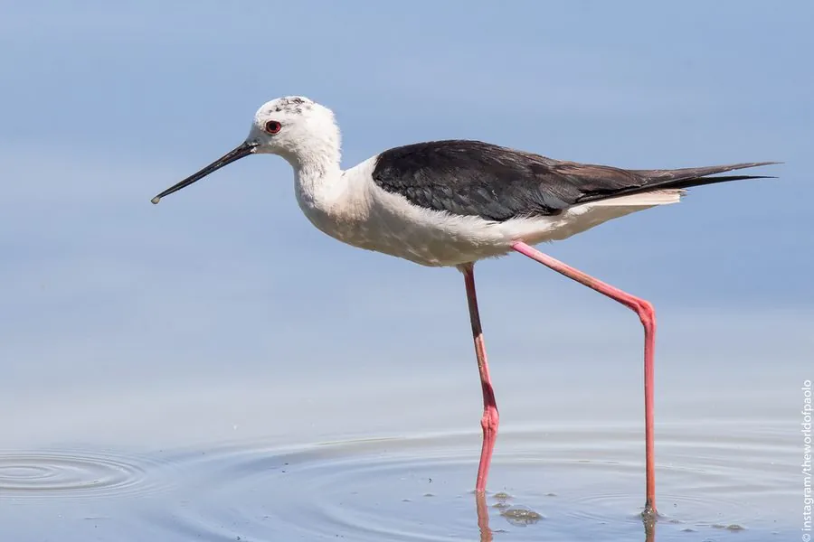

鸟类 · 动物界
黑翅长脚鹬 Himantopus himantopus

腿长得出奇、像踩高跷的涉禽，粉红色长腿配黑白分明的羽色，喜在浅水沼泽与稻田中涉水啄食，广布于全球温暖地区。
- 分类
- 门脊索动物门纲鸟纲目鸻形目科反嘴鹬科属长脚鹬属
- 栖息环境
- 浅水沼泽、盐田、稻田、河滩、水库边缘与湿地草洲
- 地理分布
- 欧洲南部、非洲、南亚至东亚及美洲的温暖地区，迁徙经中国大部
- 保护级别
- IUCN 无危（LC）；中国列为有重要生态、科学、社会价值的陆生野生动物
物种志
黑翅长脚鹬体长 35–40 厘米，体重 150–200 克，最醒目的是一双细长的粉红色腿，长度可达 20 厘米以上，占身高的一半，行走时像踩着高跷，因此得名。羽色黑白分明：头顶、后颈、背和翼为黑色，额、颈侧、胸腹为白色，飞行时腰部白色、翼下黑色。喙细长笔直，呈黑色；雌鸟背部偏褐，雄鸟背羽带绿色金属光泽。
它们栖息于浅水沼泽、盐田、稻田、河滩与水库边缘，常成群涉水觅食，用长喙在水面或泥面快速连续啄食昆虫、螺、虾和小鱼。腿长使它能在较深的水中活动而不湿羽毛。繁殖期在浅水中的土墩或芦苇丛边筑巢，每窝 3–4 枚卵，双亲孵卵约 25 天，护巢时会在入侵者头顶盘旋鸣叫、假装受伤引开注意。它们是迁徙性候鸟，秋季南迁至非洲、南亚与东南亚。
形态与习性
- 体长约 35–40 cm，体重 150–200 g
- 腿长约 20 cm 以上，占身高一半左右
- 食性水生昆虫、螺、虾、小鱼与甲壳类
- 繁殖每窝 3–4 枚卵，双亲孵卵约 25 天
- 护巢行为在入侵者头顶盘旋鸣叫，或假装受伤引开注意
- 迁徙秋季南迁至非洲、南亚与东南亚，春季北返繁殖
- 寿命野外约 8 年，最长记录超过 12 年
趣味知识
- 它的腿占到身高的一半，站在浅水里像踩着一副粉色高跷。
- 遇到天敌靠近巢区，它会故意跛行、拍翅，把对方引离巢穴。
- 长腿让它能在十几厘米深的水里觅食而不会弄湿腹部羽毛。